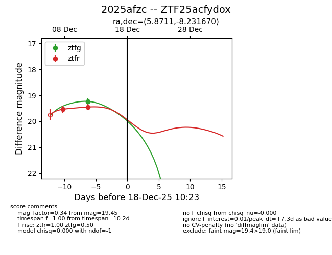
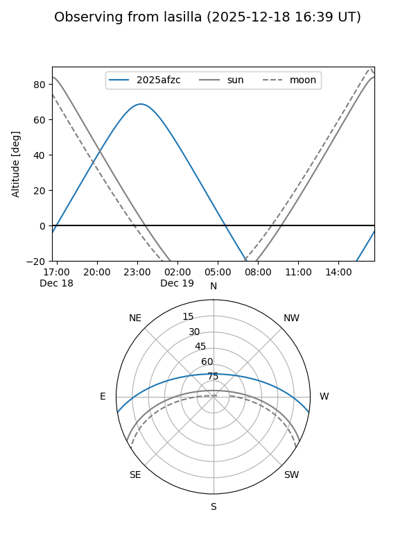
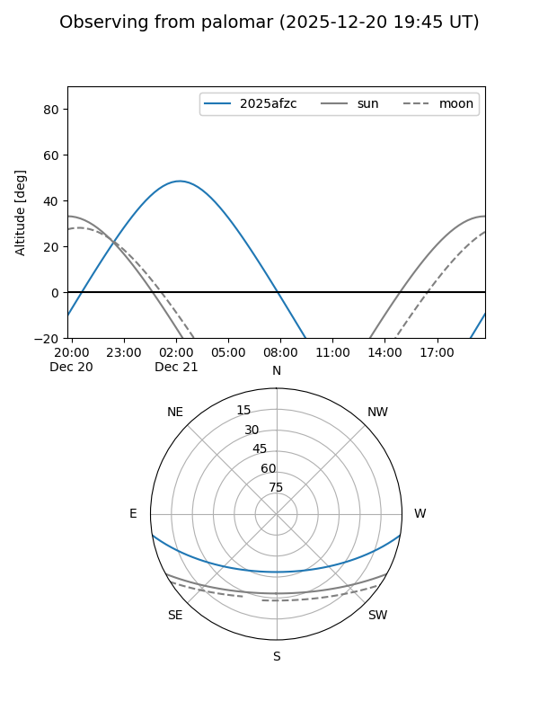
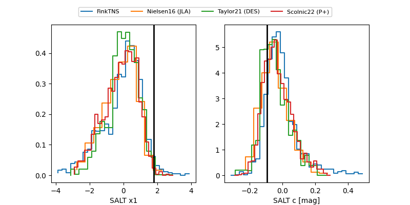

2025afzc
Target 2025afzc at 2025-12-21 06:18
Aliases and brokers:
FINK: fink-portal.org/ZTF25acfydox
Lasair: lasair-ztf.lsst.ac.uk/objects/ZTF25acfydox
ALeRCE: alerce.online/object/ZTF25acfydox
TNS: wis-tns.org/object/2025afzc
YSE: ziggy.ucolick.org/yse/transient_detail/2025afzc
alt names
ZTF25acfydox (ztf,fink_ztf)
2025afzc (tns,yse)
Coordinates:
equatorial (ra, dec) = 5.8711,-8.23167
equatorial (HMS+DMS) = 00:23:29.06,-08:13:54.01
galactic (l, b) = (102.3408,-69.97795)
Flags:
Photometry:
last ztfg=19.42, ztfr=19.62
3 ztfg, 4 ztfr detections
Lightcurve

Visibility


Additional plots
